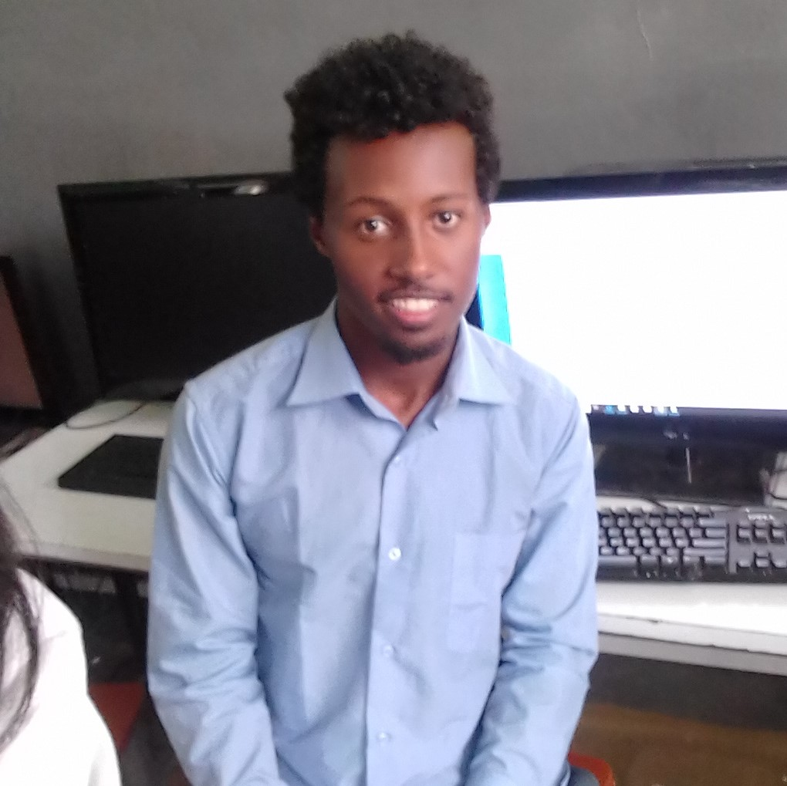
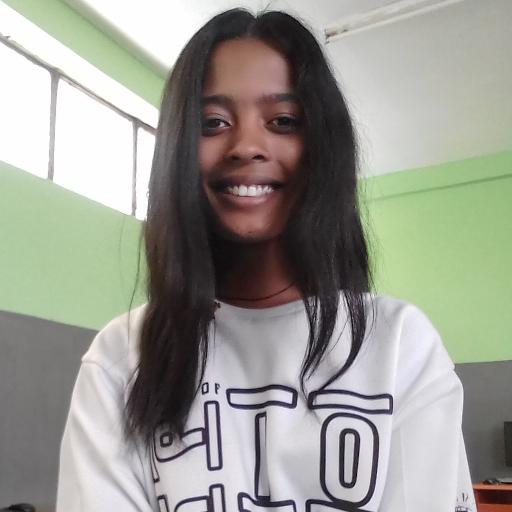
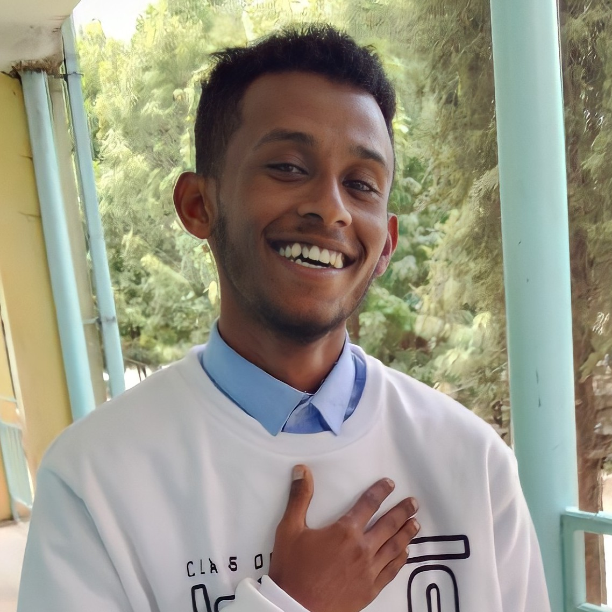
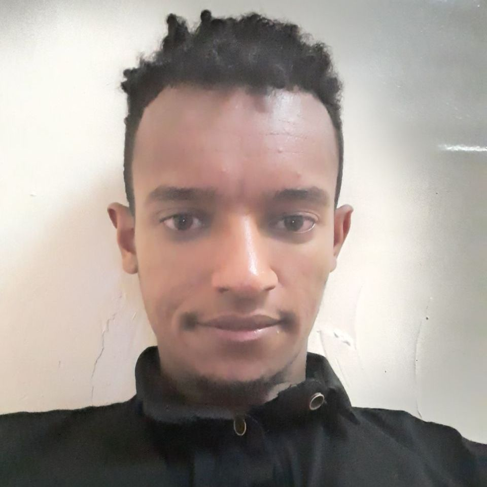
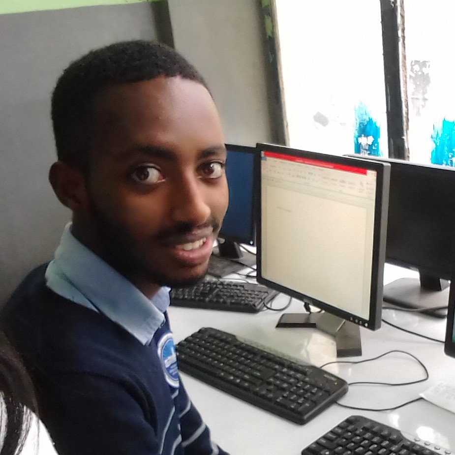
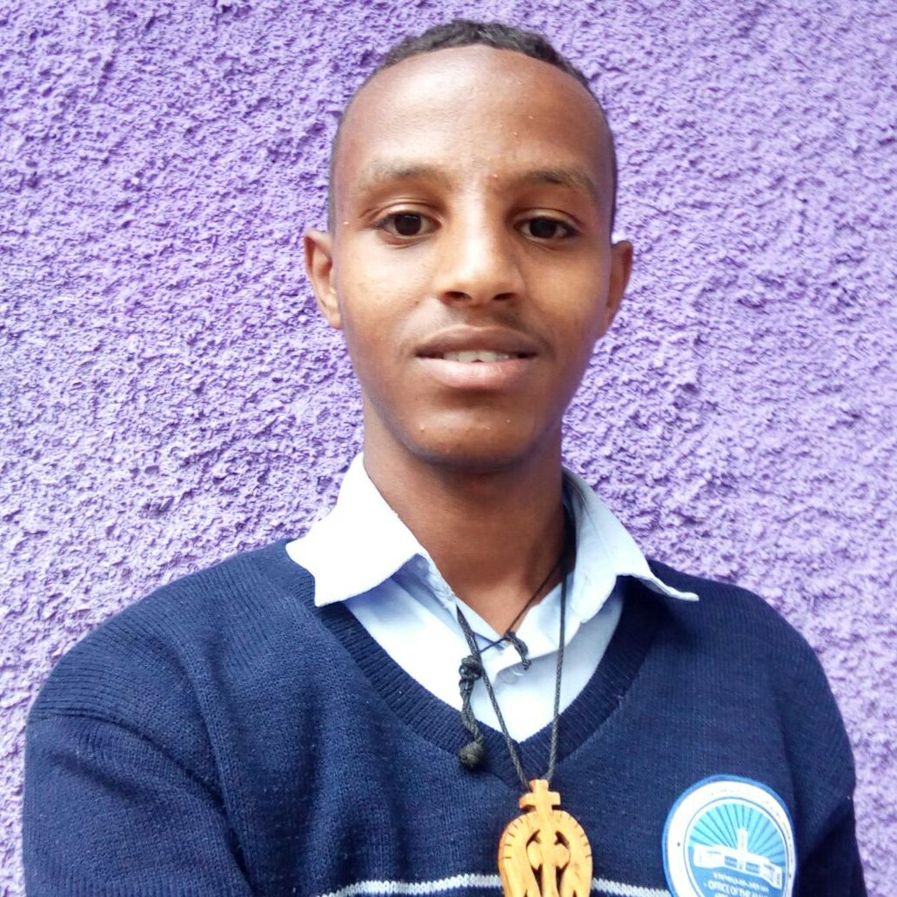
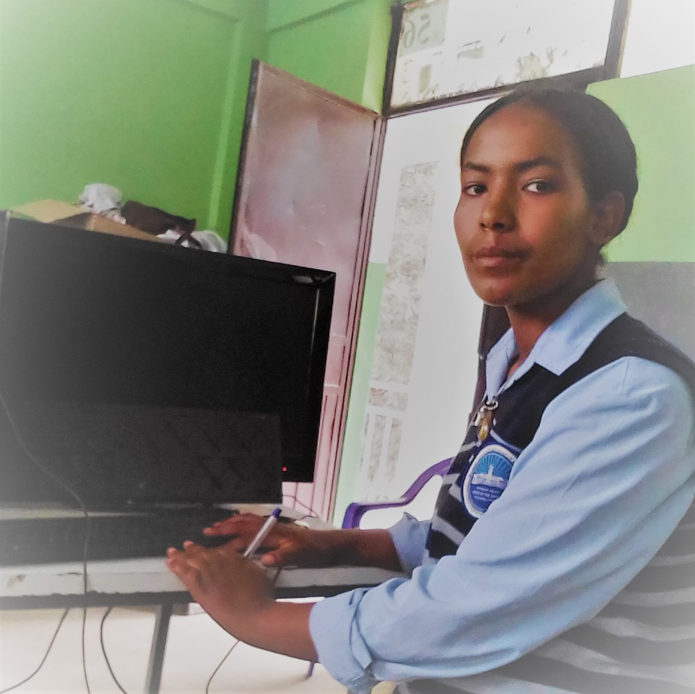
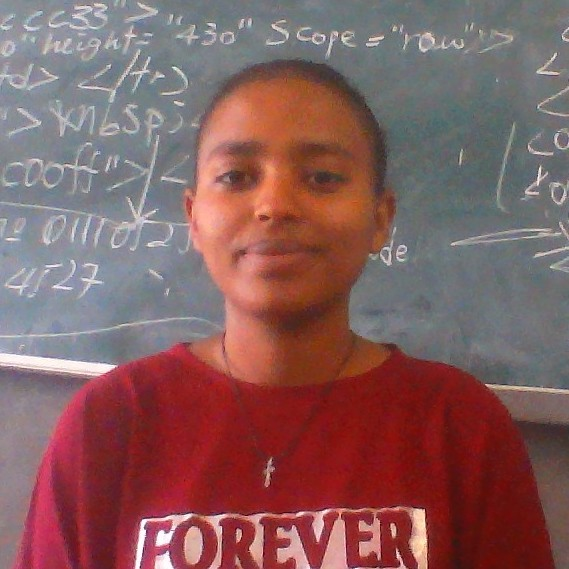

Henok Meki
"I am grade 12 student. I have learned in Balcha Aba Nefso General Secondary School since 2011E.C. I am going to be software engineer and I want to serve my country in cybersecurity sector. I have a big dream on changing the way of thinking about software engineering in my country."
Ayehubrihan Mekonen
"I am Ayehubrihan Mekonen who have a bright future ahead of me. And I am a senior high school attendant of Dejazmach Balcha Aba Nefso General Secondary School also a teenager who see her future in sector of business law."
"I know it is hard but not harder than me."
Yohannes Misganaw
"My name is Yohannes Misganaw.I am a hopeful senior student in Dej. Balcha Aba Nefso General Secondary School."
As Sir Kin Robinson said "The role of a creative leader is not to have all the ideas; it's to create a culture where everyone can have ideas and feel that they're valued."
Samuel Shewaye
"My name is Samuel shewaye. I am senior high school student in Dejazmach Balech Aba Nefso General Secondary and preparatory school. I am bright student. I live in Addis Ababa ledata Sub city. I am going to take Entrance exam this year."
Samuel Tesfachew
"I am a grade 12 student in Dej. Balcha Aba Nefso General Secondary School and I am going to take university entrance exam this year and I hope I will pass it with a high score and make my family, my school and my country proud. My favorite subjects are physics and Mathematics and my hobbies are reading books and spending time with my family. My future plan is to study software engineering and after that to join Ethiopian aviation academy to be a pilot and I am working hard to achieve my goals."
Dawit Belete
"My name is Dawit Belete. I live in Addis Abeba. I am a grade 12 student in Dej. Balcha Aba Nefso General Secondary School. I have learned in Balcha since 2011E.C. My future plan is to be a software designer."
Mahder Gedamu
My name is Mahder Gedamu, and I am one of the bright students of grade 12 studying at Dejazmach Balcha Aba Nefso General Secondary School, Addis Ababa.
Kalkidan Tilahun
"My name is Kalkidan Tilahun. I'm a grade 12 Natural Science student in Dejazmach Balcha Aba Nefso General Secondary School."